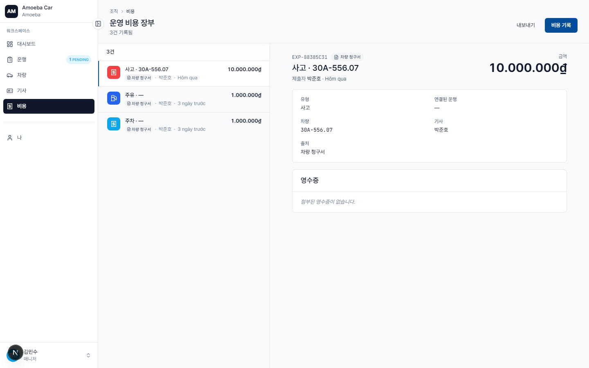

비용 장부 (Costs Ledger)
- URL
/costs- 범위
- 조직 전체 비용 (사용자 본인 비용에 한정되지 않음)
- 권한
- 조회 + CSV 내보내기 + 신규 비용 등록 — 승인 권한 없음
ℹ️
이전 버전에는 "계층적 승인"이 있었습니다 — 매니저가 휘하 기사의 비용을 승인하는 방식이었습니다. 해당 기능은 현재 버전에서 제거되었습니다 (PRD revision 3). 이제 모든 비용은 자동으로 기록되며, 매니저와 관리자는 조회만 가능합니다.
비용 장부 화면 구성

/costs 페이지는 조직 전체 비용을 시간순 장부(chronological ledger) 형태로 표시합니다.
- 왼쪽 영역: 비용 목록. 각 행에는 유형 · 금액 · 날짜 · 등록자 · 차량이 표시됩니다.
- 오른쪽 영역 (데스크톱 전용): 선택한 비용의 상세 정보 — 증빙 사진, 메모, 관련 운행 링크(있는 경우) 포함.
- 상단: 현재 필터링된 기간의 KPI 요약 (총 지출 · 건수 · 가장 많은 유형).
필터링 및 데이터 내보내기
- 유형별 — 한 가지 또는 여러 유형 선택 (FUEL, OIL 등)
- 차량별
- 기사 / 등록자별
- 기간별
- 메모 검색
오른쪽 상단의 "CSV 내보내기" 버튼을 누르면 현재 필터링된 비용이 Excel 파일로 다운로드됩니다 — 재무 부서에 보고할 때 활용합니다.
이 화면에서 신규 비용 등록하기
오른쪽 상단의 큰 "+ 비용 기록" 버튼을 누르면 /expenses/new 양식이 열립니다 (자세한 내용은 비용 기록 페이지 참조).
기사 화면과의 차이점
| 매니저 / 관리자 | 기사 | |
|---|---|---|
| URL | /costs | /expenses |
| 범위 | 조직 전체 | 본인 비용만 |
| CSV 내보내기 | ✓ | ✗ |
| 고급 필터링 | ✓ (다중 조건) | 기본 (유형 + 날짜) |